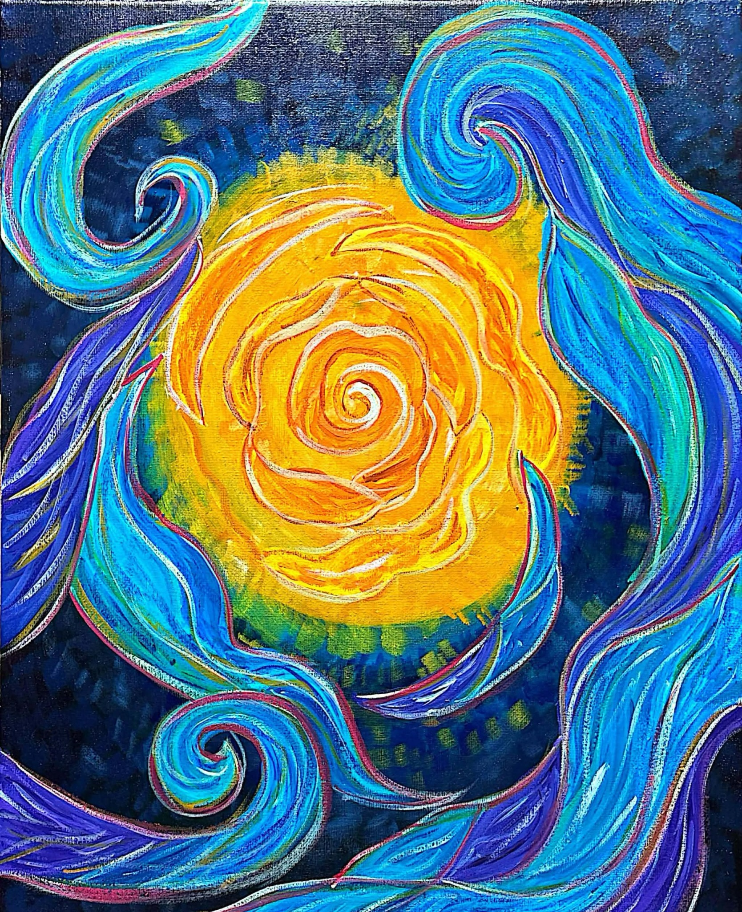

Silent Colors AR
Point your back camera at this painting. The animation will appear beside it and follow as you move.
Preparing image tracking...
Version 7 - floating image-tracked animation

Point your back camera at this painting. The animation will appear beside it and follow as you move.